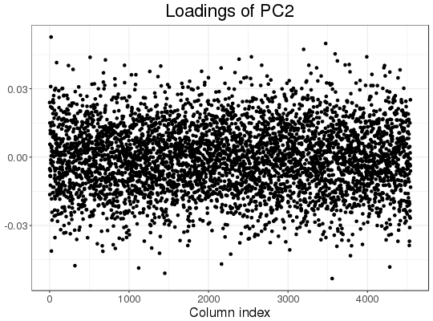
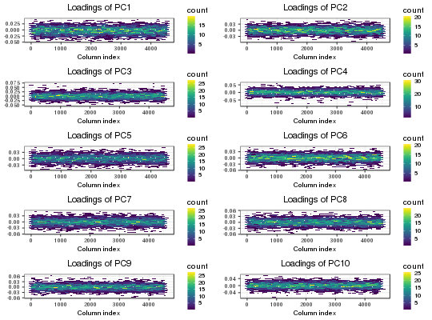

Plot method
Plot method for class big_SVD.
# S3 method for big_SVD plot(x, type = c("screeplot", "scores", "loadings"), nval = length(x$d), scores = c(1, 2), loadings = 1, cols = 2, coeff = 1, ...)
Arguments
- x
- An object of class
big_SVD. - type
- Either
- "screeplot": plot of decresing singular values (the default).
- "scores": plot of the scores associated with 2 Principal Components.
- "loadings": plot of loadings associated with 1 Principal Component.
- nval
- Number of singular values to plot. Default plots all computed.
- scores
- Vector of indices of the two PCs to plot. Default plots the first 2 PCs.
- loadings
- Indices of PC loadings to plot. Default plots the first vector of loadings.
- cols
- If multiple vector of loadings are to be plotted, this defines the number of columns of the resulting multiplot.
- coeff
- Relative size of text. Default is
1. - ...
- Not used.
Value
A ggplot2 object. You can plot it using the print method.
You can modify it as you wish by adding layers. You might want to read
http://r4ds.had.co.nz/data-visualisation.html
to get more familiar with the package ggplot2.
See also
big_SVD, big_randomSVD and asPlotlyText.
Examples
#> (2)# screeplots plot(svd) # 3 PCs seems "significant"plot(svd, coeff = 1.2) # larger font for papers# scores plot plot(svd, type = "scores") # first 2 PCsplot(svd, type = "scores", scores = c(1, 3))## add color (recall that this return a `ggplot2` object) class(obj <- plot(svd, type = "scores"))#> [1] "gg" "ggplot"pop <- rep(c("POP1", "POP2", "POP3"), c(143, 167, 207)) library(ggplot2) print(obj2 <- obj + aes(color = pop) + labs(color = "Population"))#> Error in eval(expr, envir, enclos): objet 'pop' introuvable## change the place of the legend print(obj3 <- obj2 + theme(legend.position = c(0.85, 0.17)))#> Error in eval(expr, envir, enclos): objet 'pop' introuvable## change the title and the labels of the axes obj3 + ggtitle("Yet another title") + xlab("with an other 'x' label")#> Error in eval(expr, envir, enclos): objet 'pop' introuvable# loadings plot(svd, type = "loadings", loadings = 2)## all loadings plot(svd, type = "loadings", loadings = 1:10, coeff = 0.5)# dynamic plots, require the package **plotly** ## Not run: plotly::ggplotly(obj3)